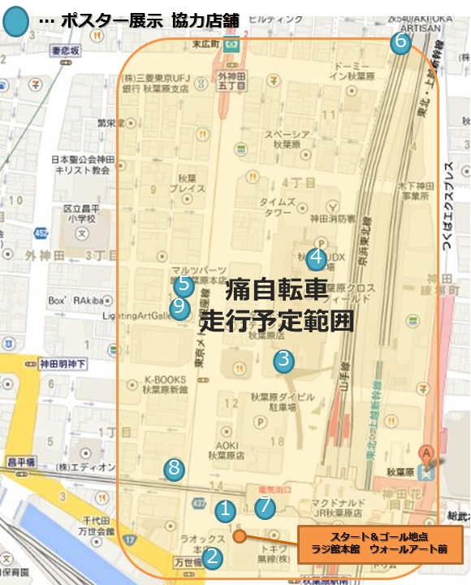
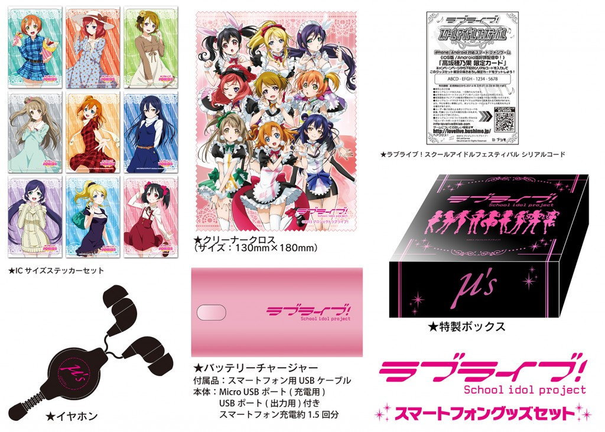

- 【続報】スクフェス秋葉原ジャック！！痛自転車・協力店舗情報 2013.12.11
先日こちらのニュースでもお知らせしたとおり、
「ラブライブ！スクールアイドルフェスティバル ハイスコアチャレンジ in 秋葉原」開催に合わせ、
12月13日(金)と12月14日(土)の2日間、秋葉原で2つの企画を実施します！■スクフェス痛自転車が秋葉原の街を回遊！
穂乃果号、海未＆ことり号、絵里＆希号、にこ＆真姫号、花陽＆凛号の計5台が秋葉原の街を 回遊します。
【走行予定時間】
12/13(金) 12:00～17:00
12/14(土) 11:00～16:00【走行予定範囲】
■秋葉原の店舗もスクフェス色に！スクフェスのUR・SRイラストポスターを展示！
以下の協力店舗でスクフェスのUR・SR12月編のμ’sの9人それぞれのイラストポスターを展示します。
店舗名 ジャンル 電話番号 住所 URL ① AKIHABARAゲーマーズ本店 書籍グッズ 03-5298-8720 東京都千代田区外神田１丁目14-7 宝田ビル http://www.anibro.jp/gamers/akihabara/main.html ② アソビットシティ グッズ 03-5298-3581 東京都千代田区外神田1-15-18 http://asobitcity.laox.co.jp/ ③ 東京アニメセンター
withあるあるCity展示 03-5298-1188 東京都千代田区 外神田4-14-1 秋葉原クロスフィールド 秋葉原UDX 4F http://www.animecenter.jp/ ④ 秋葉原UDX駐車場 駐車場 03-5289-0989 東京都千代田区外神田4-14-1 秋葉原UDX 地下1F http://www.pmo.co.jp/pnavi/akihabara-udx/ ⑤ ワンダーTシャツフェスティバル（ネオ） グッズ 090-5971-1616 東京都千代田区外神田3-13-3 TK西館2F http://www.mars16.com/wtfneo/ ⑥ Café ASAN カフェ 03-6803-0502 東京都台東区上野5-9-9 2ｋ540 AKI-OKA ARTISAN F-2 http://www.cafeasan.jp/ ⑦ 三省堂書店アトレ秋葉原1 書店 03-5289-3827 東京都千代田区外神田1-17-6 アトレ秋葉原1 2階 http://www.books-sanseido.co.jp/shop/atre_akihabara1.html ⑧ ソフマップ アミューズメント館 CD・グッズ 03-3253-3030 東京都千代田区外神田 1-10-8 平岡ビル http://www.sofmap.com/tenpo/topics/exec/_/id=shop/-/sid=map-akb ⑨ アキバ☆ソフマップ1号店 03-3253-9190 東京都千代田区外神田3-13-12 IMYビル 【実施期間】12月13日(金)と12月14日(土)の2日間
※営業時間は店舗ごとに異なりますのでご注意ください。
※一部店舗では12/15(日)以降も展示しますが、展示終了日は店舗により異なります。※やむを得ない事情により企画内容が変更・中止になる場合もございます。予めご了承くださいませ。

{kind=link}
- クリスマスプレゼントキャンペーンのお知らせ！ 2013.12.09
東京ゲームショウ2013にて発表した「100万ユーザー突破記念キャンペーン第５弾」の、クリスマスプレゼントキャンペーンの詳細が決定しました。
12/16（月）0時～1/15（水）24時の期間中、合計5日間ログインするだけで
『クリスマスカード決定戦』でユーザー投票により見事1位に輝いた、
南ことり「ことり式雪だるま」の覚醒済みURをプレゼントいたします！※お一人様1回限りもっともレア度の高いURを簡単に手に入れるチャンス！この機会をお見逃しなく！！
{kind=link}
- ヴァイスシュヴァルツ 『ラブライブ！ feat.スクールアイドルフェスティバル』に限定SRのシリアルコード封入☆ 2013.12.07
2014年1月24日発売のTCGヴァイスシュヴァルツ
『ラブライブ！ feat.スクールアイドルフェスティバル』ブースターパックに、
初回生産ボックス特典としてスクフェスの限定SRが封入されます！1ボックスに1つ封入されるシリアルコードで、
ヴァイスシュヴァルツ用に描き下ろされた「No brand girls」衣装のイラストの
覚醒済みSRカードが入手できます。・1つのシリアルコードでメンバー3人分（3枚）のカードが入手できます
・シリアルコードの記載されているチラシにはA～Cの3種類があり、1ボックスにつき1枚、いずれかがランダムで封入されます
・チラシにはそのシリアルコードでどのメンバーのカードが入手できるか記載されます≪ラブライブ！スクールアイドルフェスティバル シリアルコードに関する注意事項≫
●シリアルコードの入力は、1回限りになります。
●シリアルコードの有効期限は 2014年7月31日 23:59です。
●お手持ちのスマートフォンにアプリをインストールの上ご利用ください。
●有効期限までにアプリの配信が開始されている端末でのみご利用いただけます。
●本シリアルコードで入手できるアイテムは、予告なく変更する可能性がございます。また、やむを得ない事情により、本シリアルコードによるアイテムの配布を中止する場合があります。まだTCGで遊んだことのない方も、前回のトライアルデッキ、ブースターパックと合わせて
是非この機会にヴァイスシュヴァルツを始めてみてください！
■ヴァイスシュヴァルツブースターパック
『ラブライブ！ feat.スクールアイドルフェスティバル』
2014年1月24日発売
1パック8枚入り 330円（税込）
1ボックス 20パック入り 6,600円（税込）
カード種類数：80種＋パラレル27種
- ラブライブ！新作グッズセットに限定UR「園田海未」のシリアルコード封入☆ 2013.12.06
東京ビッグサイトにて12月29日（日）～31日（火）に行われる「コミックマーケット85」
ブシロードブースにて販売される新作グッズセットに、
スクフェスの限定UR「園田海未」が手に入るシリアルコードが封入されます！
————————————
ラブライブ！グッズセット
セット内容
・ポストカード9種セット
(※ホロ加工です！)
・ポストカードファイル
・ミニブランケット
(サイズ：約480mm×800mm)
・ラブライブ！スクールアイドルフェスティバルシリアルコード
（このセット限定「園田海未」のカードです！！）
※特製箔押しボックス入り
≪ラブライブ！スクールアイドルフェスティバル シリアルコードに関する注意事項≫ ●シリアルコードの入力は、1回限りになります。 ●特典アイテムの取得は、1アカウントにつき1回のみになります。 ●シリアルコードの有効期限は 2014年6月30日 23:59です。 ●お手持ちのスマートフォンにアプリをインストールの上ご利用ください。 ●有効期限までにアプリの配信が開始されている端末でのみご利用いただけます。 ●本シリアルコードで入手できるアイテムは、予告なく変更する可能性がございます。 また、やむを得ない事情により、本シリアルコードによるアイテムの配布を中止する場合があります。
【販売価格】 6,000円（税込）
【発売日】 2013年12月29日(日)
【その他の販売予定イベント】・新春トリオ祭2014（2014年1月12日～13日）※後日、 HiBiKi EC SHOP!にて通信販売予定。
- ブシモ放送局ジャック！！ 2013.12.02
12月13日（金）19:00〜ニコニコ生放送にて放送の「ブシモ放送局」をスクフェスがジャックします！
ゲストにラブライブ！東條希役の楠田亜衣奈さんを迎え、
「ハイスコアチャレンジ in 秋葉原」を生中継しながらお送りします。同日18：00～は「ハイスコアチャレンジ in 秋葉原」のイベント生中継のみの番組も実施いたします！
（※ゲストの楠田亜衣奈さんの出演は19時からになります）なんとこの日、スクフェスのための書き下ろし新曲『タカラモノズ』をほんの少しだけ、お聞かせしちゃいます！
さらに、12月15日（日）より特待生勧誘に追加予定の「あの子」のURもチラ見せ…？！【ブシモ放送局公式Twitter】 @bushimostation
【番組URL】 http://live.nicovideo.jp/watch/lv159867741
- スクフェス秋葉原ジャック！！ 2013.12.02
ユーザー数が100万人を突破してますます盛り上がる
「ラブライブ！スクールアイドルフェスティバル（以下、スクフェス）」が、秋葉原をジャックしちゃいます！！１）「ハイスコアチャレンジ in 秋葉原」開催！
しろくろフェス、東京ゲームショウ2013で大好評だった「ハイスコアチャレンジ」が再び！今度は秋葉原にて開催決定！
「ハイスコアチャレンジ」は、会場に設置された端末でスクフェスの「ライブ」をプレイして、ハイスコアを競って頂くイベントです。
なんと今回、挑戦者が実際にプレイしている画面が、秋葉原ラジオ会館1号館「ラジカメVISION」のモニターにリアルタイムで映し出されます！
指定曲は「僕らは今のなかで」。難易度はEASY/NORMAL/HARDどれでもOK！大勢の観衆の前で腕をふるって、ハイスコアを出して、ランキングに名前を載せちゃおう！
挑戦してくれた方全員に、「スクフェスオリジナルステッカー」をプレゼント！
（ランキング入賞による賞品などはございません）【イベント日時】
12/13(金)18:00-20:00（16:30受付開始予定）
12/14(土)15:00-17:00（13:30受付開始予定）本イベントに挑戦者としてご参加いただける人数には限りがあるため、挑戦者は事前応募による抽選で決定させて頂きます。
http://lovelive.bushimo.jp/hsc_akiba/ よりご応募ください。
（応募受付期間：12/2 20:00～12/8 24:00）※注意事項をよくご確認いただき、イベント参加規約に同意の上でお申込みください。
２）スクフェスの広告を施した痛自転車が秋葉原の街を回遊！
「ハイスコアチャレンジ」開催に合わせ、12月13日(金)と12月14日(土)の2日間、
スクフェスの痛自転車が秋葉原の街を回遊します！穂乃果号、海未＆ことり号、絵里＆希号、にこ＆真姫号、花陽＆凛号の計5台を予定！
実施時間など詳細は追って、このページやtwitterなどで発表いたします。３）秋葉原の店舗もスクフェス色に！スクフェスのUR・SRイラストポスターを展示！！
「ハイスコアチャレンジ」開催に合わせ、12月13日(金)と12月14日(土)の2日間、
秋葉原の協力店舗にて、UR・SR12月編のイラストポスターを展示いたします。
（一部店舗では12/15(日)以降も展示しますが、展示終了日は店舗により異なります）協力店舗について詳細は追って、このページやtwitterなどで発表いたします。
４）秋葉原の街でμ’sに会える！
スクフェスの広告展開、CM放映を以下の日程・場所で実施いたします！
お近くへお越しの際は、是非チェックしてみてくださいね！【広告展開】
12月1日～12月31日…秋葉原ラジオ会館ウォールアート、秋葉原ラジオ会館1号館ラジカメVISION、秋葉原駅中央改札デジタルサイネージ
12月9日～15日…秋葉原駅構内B0ポスター、秋葉原駅電気街口フロア広告
12月10日～…フリーマガジン「ラジ館」第12号表紙＆特集記事（※無くなり次第終了）
12月26日～1月15日…秋葉原駅前商店街フラッグ【CM放映】
12月1日～12月31日…秋葉原ラジオ会館1号館ラジカメVISION
12月9日～15日…秋葉原UDXビジョン、アキバビジョン（LaOX本店）
12月17日～1月13日…秋葉原UDXビジョン
※12月9日～15日 池袋リプレビジョン（池袋シネマサンシャイン）でも実施
- “スクフェスのための書き下ろし新曲”ついに配信決定！！ 2013.11.29
100万人突破記念キャンペーン第四弾としてお伝えしていた“スクフェスのための書き下ろし新曲”が
ついに12/15(日)16時より配信開始となります！
その曲名は『タカラモノズ』！！
Rank72で解放となりますが、まだRank72に達していない方もアプリの起動画面で曲を聴くことができます♪
さらに、『タカラモノズ』は2014年1月29日にCD発売も決定！
カップリング曲の『Paradise Live』もスクフェスでの先行配信を予定しています。
どちらもとても素敵な曲ですので、配信開始をお楽しみに♪
- 東京ゲームショウ2013ブシロードブース「ラブライブ！」関連情報 2013.09.17
9月19日（木）～22日（日）に幕張メッセにて開催される
東京ゲームショウ2013ブシロードブース「ラブライブ！」関連情報をお知らせします！
（※一般公開日は9月20日、21日の2日間です。19日、20日はビジネスデイとなります。）———————————————————–
★展示コーナー【ラブライブ！スクールアイドルフェスティバル】
ラブライブ！スクールアイドルフェスティバル『ハイスコアチャレンジ！』を開催！
指定曲「No brand girls」をプレイしてハイスコアを競っていただきます。
参加していただいた方全員にスクフェス特製ステッカーをプレゼント！
1位～30位はランキングにスコアとお名前が掲載されますので、是非上位目指して頑張ってくださいね！・特製ステッカーのプレゼントはお一人様一枚までとさせて頂きます（お渡し時に手の甲にスタンプを押させて頂きます）
・会場内のすべての端末でユニット及びステータスは固定となっております
・ランキングは期間中毎日リセットされます———————————————————–
★ステージ【ラブライブ！スクールアイドルフェスティバル スペシャルトークステージ】
【日時】
9月21日(土)12：00開演予定【出演】μ’s
新田恵海（高坂 穂乃果役）、南條愛乃（絢瀬 絵里役）、内田 彩（南 ことり役）、
三森すずこ（園田 海未役）、飯田里穂（星空 凛役）、Pile（西木野 真姫役）、
楠田亜衣奈（東條 希役）、久保ユリカ（小泉 花陽役）、徳井青空（矢澤 にこ役）【内容】
大好評配信中のスマホアプリ「ラブライブ！スクールアイドルフェスティバル」の
スペシャルトークステージです。μ’sのみなさまと“スクフェス”について語り合いましょう♪
⇒ラブライブ！スクールアイドルフェスティバル公式ページ※観覧には整理券が必要となります。
整理券の配布について、詳細は東京ゲームショウ2013HPをご確認ください。
⇒http://expo.nikkeibp.co.jp/tgs/2013/visitor/numbered_ticket.html
※ご来場の前に必ず東京ゲームショウ2013の「お願いとご注意」をご確認ください。
⇒http://expo.nikkeibp.co.jp/tgs/2013/visitor/attention.html———————————————————–
★ステージ【ラブライブ！μ’s広報部～にこりんぱな～ TGS出張版！】
【日時】
9月21日(土) 14：00開演予定【出演】
徳井青空（矢澤 にこ役）、飯田里穂（星空 凛役）、久保ユリカ（小泉 花陽役）【内容】
響Radio Station、インターネットラジオステーション〈音泉〉にて好評配信中の
「ラブライブ！μ’s広報部～にこりんぱな～」が
東京ゲームショウ2013にやってきた！会場にて公開録音を実施します。
出演者への質問等も番組ページで受け付けています♪
⇒ 「ラブライブ！μ’s広報部～にこりんぱな～」番組ページ※観覧には整理券が必要となります。
整理券の配布について、詳細は東京ゲームショウ2013HPをご確認ください。
⇒ http://expo.nikkeibp.co.jp/tgs/2013/visitor/numbered_ticket.html
※ご来場の前に必ず東京ゲームショウ2013の「お願いとご注意」をご確認ください。
⇒ http://expo.nikkeibp.co.jp/tgs/2013/visitor/attention.html———————————————————–
★物販コーナー
アニメロサマーライブ2013にて先行販売を行いましたマイクロファイバータオルなどの商品の販売を行います。
販売商品や詳細については以下のページをご確認ください。
⇒ http://bushiroad.com/events/tgs2013.html#store———————————————————–
【ご来場に関して】
東京ゲームショウ2013公式サイトにて開催概要をご確認ください。
⇒ 東京ゲームショウ2013公式サイト【注意事項】
※ステージの撮影・録音は禁止となります。
※ペンライトの大量使用や大きなうちわ・看板など、周りのお客様のご迷惑になる応援はご遠慮ください。
※係員の指示や注意事項に従っていただけない場合、入場をお断りすることがあります。
※やむを得ない事情により内容の変更やステージが中止となる場合がございます。予めご了承ください。その他、東京ゲームショウ2013ブシロードブースにつきましては以下のページをご確認ください。
⇒ 株式会社ブシロード公式サイト 東京ゲームショウ2013出展情報
{kind=link}
- 雑誌掲載情報 2013.09.05
スクフェスの情報が掲載される雑誌をお知らせします！
■ファミ通App Android NO.009
・9/5発売
・スクフェス特集記事
・特典シリアルコード（[R]山内奈々子1枚※）
※[R]山内奈々子は「先生」で、ユニットに加えたり覚醒したりすることはできませんが、練習で力を発揮します。■月刊ブシロード
・9/6発売
・スクフェス紹介記事
・特典シリアルコード（[R]アルパカ1枚※）
※[R]アルパカはユニットに加えたり覚醒したりすることはできませんが、練習や転部で力を発揮します。
⇒月刊ブシロード詳細
- ラブライブ！スマートフォングッズセット発売！限定URのシリアルコード封入☆ 2013.08.05
スクフェスユーザーの必需品？！ラブライブ！スマートフォングッズセットの発売が決定！
ここでしか手に入らない限定UR高坂穂乃果が手に入る、シリアルコードも封入☆さいたまスーパーアリーナにて8月23日（金）～25日（日）に開催される
「Animelo Summer Live 2013 -FLAG NINE-」のブシロードブースにて先行販売いたします。
後日、 HiBiKi EC SHOP!にて通信販売を予定している他、イベント等でも販売予定です。------------------------------------ ラブライブ！スマートフォングッズセット ＜内容＞ ・バッテリーチャージャー（USBケーブル付属）×1 ・イヤホン ・クリーナークロス ・ICサイズステッカーセット ・ラブライブ！スクールアイドルフェスティバル シリアルコード （このセット限定の覚醒済みUR「高坂穂乃果」が入手出来ます） ※特製箔押しボックス入り 
↑封入シリアルコードで手に入る覚醒済みUR「高坂穂乃果」はここでしか手に入らない限定カード！
≪ラブライブ！スクールアイドルフェスティバル シリアルコードに関する注意事項≫ ●シリアルコードの入力は、1回限りになります。 ●特典アイテムの取得は、1アカウントにつき1回のみになります。 ●シリアルコードの有効期限は 2014年3月31日 23:59です。 ●お手持ちのスマートフォンにアプリをインストールの上ご利用ください。 ●有効期限までにアプリの配信が開始されている端末でのみご利用いただけます。 ●本シリアルコードで入手できるアイテムは、予告なく変更する可能性がございます。また、やむを得ない事情により、本シリアルコードによるアイテムの配布を中止する場合があります。
【販売価格】 6,800円（税込） 【発売日】 2013年8月23日
{kind=link}
{kind=link}
- 【発売中】ヴァイスシュヴァルツ『ラブライブ！』ボックス初回生産特典シリアルコード 2013.07.26
好評発売中のヴァイスシュヴァルツ『ラブライブ！』ブースターパックにボックス初回生産特典として、スクフェスのシリアルコードが封入されています！
このシリアルコードを使用すると、ヴァイスシュヴァルツ用に描き下ろされた「僕らのLIVE 君とのLIFE」の衣装のイラストの覚醒済みSRカードがもらえます。・初回生産分1ボックスにつき1つのシリアルコードが封入されます
・1つのシリアルコードでメンバー3人分（3枚）のカードが入手できます
・シリアルコードの記載されているチラシにはA～Cの3種類があり、1ボックスにつき1枚、いずれかがランダムで封入されます
・チラシにはそのシリアルコードでどのメンバーのカードが入手できるか記載されます※シリアルコードをご利用いただくには対応のスマートフォンで「ラブライブ！スクールアイドルフェスティバル」をダウンロードする必要があります
※シリアルコードの入力には期限がありますのでご注意ください特典の封入は初回生産分のボックス限定ですので、なくなり次第終了となります！
■ヴァイスシュヴァルツブースターパック『ラブライブ！』
発売中
1パック8枚入り 330円（税込）
1ボックス 20パック入り 6,600円（税込）
カード種類数：100種＋パラレル27種
- アスキー・メディアワークス様より公式ガイドブック発売！ 2013.07.16
アスキー・メディアワークス様より、「ラブライブ！スクールアイドルフェスティバル 公式ガイドブック」が発売となります！
ゲームの攻略に役立つ情報はもちろん、楽曲の歌詞データ、カードデータ、
μ’sメンバーのインタビューなどを収録しています。限定特典として、覚醒済みUR「南ことり（ダーツガール）」が入手できるシリアルコードが封入されます。
【書籍情報】
■ラブライブ！スクールアイドルフェスティバル 公式ガイドブック
■全64ページ／オールカラー
■発売日：2013年7月30日（火）
■定価：998円（税込）
■発行：株式会社アスキー・メディアワークス
■発売：株式会社KADOKAWA≪注意事項≫
●シリアルコードの入力は、1回限りになります。
●特典アイテムの取得は、1アカウントにつき1回のみになります。
●特典アイテムの入手期間は、2013年7月30日（火）11：00～2014年7月30日（水）17：00です。
●お手持ちのスマートフォンにアプリをインストールの上ご利用ください。
●有効期限までにアプリの配信が開始されている端末でのみご利用いただけます。
●本シリアルコードで入手できるアイテムは、予告なく変更する可能性がございます。また、やむを得ない事情により、本シリアルコードによるアイテムの配布を中止する場合があります。【関連サイト】
ラブライブ！スクールアイドルフェスティバル 公式ガイドブック編集部特設サイト
http://news.dengeki.com/dga/schfes/
※サイトは2013年7月30日（火）に公開予定です。
{kind=link}
{kind=link}
- Android版ダウンロード可能端末、推奨端末につきまして 2013.07.05
7/6（土）午前5時以降、Android版のダウンロード可能端末を更新いたします。
・ 一部の端末において、Android OS 2.3以上でダウンロードできるようになります。（2013/7/5追記）
・ 一時的にダウンロード可能端末から除外していたNW-Z1000シリーズでダウンロードできるようになります。（2013/7/5追記）この更新により、ダウンロード可能端末は以下の通りとなります。
【ダウンロード可能端末】
Android4.0以降
（※一部端末を除く）※Tegra2を搭載したAndroid端末でアプリが起動できないことを確認しております。そのためWalkman Z(NW-Z1000シリーズ)をダウンロード可能端末から除外しました。修正の目途が立ちましたらご案内いたします。（2013/6/6追記）⇒Walkman Z(NW-Z1000シリーズ)でも動作を確認できましたので、ダウンロード可能にいたしました。（2013/7/5追記）
Android2.3以降の以下の端末
GALAXY S II(SC-02C)
GALAXY Note(SC-02E)
AQUOS PHONE(SH-06D)
LUMIX Phone(P-02D)
MEDIAS ES(N-05D)
GALAXY S II WIMAX(ISW11SC)
Optimus X(IS11LG)【推奨端末】
Xperia Z（SO-02E）
ARROWS X（F-02E）
Xperia A（SO-04E）
GALAXY NEXUS（SC-04D）
GALAXY Tab 7.0 Plus（SC-02D）
Xperia acro HD（SO-03D）
Xperia GX（SO-04D）
Xperia SX（SO-05D）
GALAXY Note II（SC-02E）
XPERIA AX（SO-01E）
AQUOS PHONE EX（SH-04E）
Xperia acro HD（IS12S）
HTC J butterfly（CDMA HTL21）
※推奨端末以外でもダウンロード可能ですが、使用状況により動作が安定しない場合がございます
- 登録ユーザー数が50万人を突破しました！ 2013.06.26
『ラブライブ！スクールアイドルフェスティバル』の登録ユーザー数が50万人を突破しました！
※登録ユーザー数とは同一端末を除くインストールユーザー数ですこれを記念して「ラブライブ！スクールアイドルフェスティバル」では明日より以下のキャンペーンを開催いたします。
詳細はゲーム内の「お知らせ」でご確認ください。●ラブカストーンプレゼント
6/27(木)～7/3(水)までの間、1日1個、合計7個のラブカストーンをプレゼントいたします。
※前日までに登録されたお客様に、毎日14時頃、配布いたします●ゲーム内イベントの再配信
これまでに開催した2つのゲーム内イベントを、以下の期間限定で再配信いたします。１．Sweet Holiday
期間：6/28(金)16時～7/5(金)15時２．月まで抱いて Love*Heart
期間：7/8(月)16時～7/15(月)15時※イベントの詳細はゲーム内の「お知らせ」でご確認ください
※イベントの再配信は今回特別に行うもので、今後の実施予定はございません●難易度の高いEX曲の毎週配信
6/24(月)より特別楽曲で配信を開始したEX曲ですが、今後は異なる曲を毎週月曜0時に配信していきます。
※配信期間はそれぞれ配信開始から2週間となります
- Android版の配信を開始しました！ 2013.06.06
『ラブライブ！スクールアイドルフェスティバル』Android版の配信を開始しました。
Google Playよりダウンロードしてご利用ください。
https://play.google.com/store/apps/details?id=klb.android.lovelive
※Android4.0以降でご利用いただけます【推奨端末】
Xperia Z（SO-02E）
ARROWS X（F-02E）
Xperia A（SO-04E）
GALAXY NEXUS（SC-04D）
GALAXY Tab 7.0 Plus（SC-02D）
Xperia acro HD（SO-03D）
Xperia GX（SO-04D）
Xperia SX（SO-05D）
GALAXY Note II（SC-02E）
XPERIA AX（SO-01E）
AQUOS PHONE EX（SH-04E）
Xperia acro HD（IS12S）
HTC J butterfly（CDMA HTL21）
※推奨端末以外でもダウンロード可能ですが、使用状況により動作が安定しない場合がございます
- 類似アプリにご注意ください 2013.05.23
「ラブライブ！スクールアイドルフェスティバル」は現在App Storeにて好評配信中です。
Google Playでも6月中旬頃より配信を予定しておりますが、現時点ではAndroid版アプリの配信は一切行なっておりません。
類似アプリにご注意いただきますよう、よろしくお願いいたします。
- 雑誌掲載情報 2013.05.20
これから発売のアプリ専門誌にスクフェスの情報が掲載されます！
■ファミ通App NO.007 Android
・5/23発売
・スクフェス特集記事
・シリアルコード（「Rアルパカ」カード1枚）■ファミ通App NO.008 iPhone
・6/6発売
・スクフェス特集記事
・シリアルコード（「Rアルパカ」カード1枚）
・南ことり役 内田彩さんインタビュー※「ファミ通App NO.007 Android」と「ファミ通App NO.008 iPhone」の記事及びシリアルコードアイテムの内容は同じです。内田彩さんのインタビューの掲載は「ファミ通App NO.008 iPhone」のみとなりますのでご注意ください。
■アプリスタイル 2013年7月号
・5/28発売
・スクフェス特集記事
以下は既に発売済みのものです。こちらも是非チェックしてみてくださいね♪■アプリFan 2013年6月号
・5/10発売
・表紙
・スクフェス特集記事
- iOS版の配信を開始しました！ 2013.04.15
『ラブライブ！スクールアイドルフェスティバル』iOS版の配信を開始しました。
App Storeよりダウンロードしてご利用ください。
https://itunes.apple.com/app/consume-mobile-isp-packages/id626776655※iOS 5.1以上でご利用いただけます
なお、Android版も現在鋭意開発中です！
配信の予定が決まり次第、告知させて頂きますので今しばらくお待ちくださいませ。
- ANIME CONTENTS EXPO 2013にて試遊展示を行います！ 2013.03.27
3/30（土）～3/31（日）開催の「ANIME CONTENTS EXPO 2013」ブシロードブースにて、スクフェスの試遊展示を行います！
誰よりも早くアプリに触れてみたい！という方は、是非会場にてお試しください。※入場料の必要なイベントです。イベントについての詳細はANIME CONTENTS EXPO 2013公式サイトをご覧ください。
※出展内容は変更となる場合もございますので予めご了承ください。
※混雑時にはアプリの試遊時間を制限させて頂く場合がございます。予めご了承ください。
- 雑誌掲載情報 2013.03.27
アプリ専門誌にスクフェスの情報が掲載されています！
・ファミ通App No.006（3/21発売）
・アプリスタイル5月号（3/28発売）
・電撃ゲームアプリVol.9（4/13発売）「ファミ通App No.006」と「電撃ゲームアプリVol.9」には、
ゲーム内で使えるアイテム【ラブカストーン】がもらえるシリアルコードも封入していますので、是非ご利用ください♪※シリアルコードはアプリ配信開始後、本誌に記載の期限までご使用いただけます